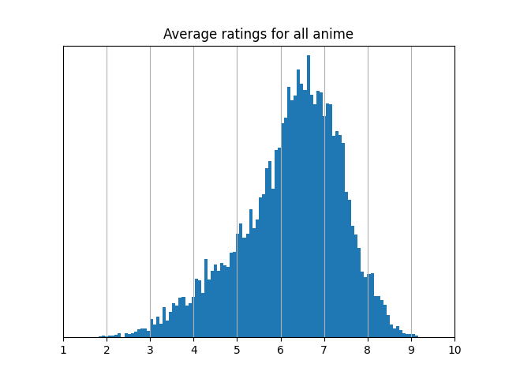

The Problem With Averaging Ratings (And How to Fix It)
Personal rating scales
Here’s a common situation: We want to compare a number of items—like movies, restaurants, or job applicants—to see which ones we prefer to others. So we have people provide numerical ratings for each item—like a number between 1 and 10—and we compare the average ratings for each item. This is an approach that goes back almost a hundred years, but there’s a fundamental issue: people rate according to different personal rating scales.
For example, suppose we have two people, Alice and Bob, rating movies.
Alice tends to give ratings between 2 and 9 (out of 10), and Bob tends to give ratings between 8 and 10.

If Alice and Bob both rate a movie 8, then these numbers mean very different things! Alice loved the movie, but Bob hated it—and the average treats these two ratings as the same.
Averaging takes the numbers at face value. A score of 8 is considered to be literally twice as good as a 4, and the difference between 7 and 8 is assumed to be the same as the difference between 9 and 10. But this doesn't capture the difference in meaning of Alice and Bob's ratings.
Personal rating scales can lead to unfair comparisons, as well. If Alice and Bob rate different job applicants, Bob’s high ratings give an unfair advantage to anyone he rates. Simply averaging ratings forces us to interpret these numbers in a way which is divorced from their context.
Looking at the data
If we take a closer look at the data, we can get a hint as to where we're going wrong. When we average the ratings for a particular item, we only look at one column of the rating matrix at a time.

However, we have a greater wealth of information available. Looking at each row of the rating matrix provides context for that person's ratings. When Alice rates multiple items, we can learn her personal rating scale by looking at the collection of all her ratings—what we call her empirical rating distribution.

A common scale
If we can't average Alice's and Bob's ratings because they correspond to different rating scales, then we should first convert the scores to corresponding ratings on a common/consensus scale to make them comparable. In our example, Alice's 8 might be converted to a consensus 9, while Bob's 8 might be converted to a consensus 2. But how do we determine a common rating scale? Taking a step back: when we convert someone’s ratings—say, Alice’s—to the common scale, we’re effectively reshaping her personal rating distribution.

This reshaping is known as an optimal transport map, and we can measure how much it changes her original scale. So a natural goal is to find a common scale that changes everyone’s personal scales as little as possible. This gives a kind of average of everyone’s personal rating scales, called a Wasserstein barycenter.

Once we convert the ratings for an item to a common scale, we can compare and average them. This gives us a new method of averaging ratings, the rating estimator.
Benefits of the rating estimator
The rating estimator has a number of benefits over the standard average:
Corrects rater bias in sparse data
Suppose that Alice and Bob rate different job applicants. As mentioned before, when we use the standard average, Bob's high ratings give an unfair advantage to anyone he rates. However, by converting Bob's ratings to the common scale, the rating estimator accounts for his right-shifted rating scale, leading to a fairer comparison.
Meaningful and interpretable differences between ratings
Because people interpret rating scales differently, a difference between, say, 7 and 8 might not mean the same thing across raters. This makes it hard to interpret differences between average ratings in a meaningful way. The rating estimator addresses this by reporting scores on a shared scale—the Wasserstein barycenter—so that differences between scores are directly comparable. Moreover, using the Wasserstein barycenter preserves the overall scale of the original data. So if ratings range from 1 to 5 stars and users tend to use that full range, the rating estimator scores will span that same range, rather than being compressed into a narrow band like 3.5 to 4.5, which often happens with simple averages.
Highly ranked items are preferred by raters
Average ratings can be inflated by generous raters who tend to give high scores across the board (such as new users on a rating website). By contrast, the rating estimator highlights items that each rater ranked at the top of their list. As a result, the estimator's top-rated items are more likely to be preferred over lower-ranked ones by more raters.
Theoretical guarantees
Under non-parametric assumptions—that is, without assuming what the ratings look like—the rating estimator provably outperforms the average in estimating the quality of items (for details, see my paper on the rating estimator).
Analyses of real-world rating data
Let's see the rating estimator in action in a few different contexts. If you'd like to try it out on your own rating data, here's a Python implementation.
Foodpanda Bangladesh restaurant ratings
Foodpanda is an online food delivery service that allows users to rate and review restaurants. This dataset of ratings from Foodpanda's Bangladeshi users has over 300000 reviews from over 3800 users of over 3600 restaurants. Foodpanda ratings are given on a 5 star scale, with 1 star being the lowest and 5 stars being the highest; restaurants and delivery people are rated separately, so we will only look at the restuarant ratings here. To improve the data quality, I removed users and restaurants with fewer than 10 ratings (an arbitrary cutoff) associated to them.
There's a stark difference between the average ratings and rating estimator scores for these restaurants:
While average ratings tend to follow a familiar bell curve, the rating estimator scores often show two clear peaks—one near 1 star and one near 5. That’s because users tend to have a clear distinction in ratings between restuarants they like and restaurants they didn't. The restaurants with the lowest rating estimator scores are often at the bottom of people’s lists, while the restuarants with the highest rating estimator scores are often at the top. This makes the rating estimator especially helpful for users trying to tell the difference between a likely great experience and a likely bad one; a 1 star score means people tend to give it 1 star, and a 5 star score means people tend to give it 5 stars. In contrast, average ratings can blur that distinction: two restaurants with similar averages might differ a lot in quality, and the meaning of those average scores is harder to pin down since the scale—scores mostly between 2 and 3.5—is different from the scale users rate on.
MyAnimeList anime ratings
MyAnimeList is a website for rating anime (Japanese animated tv shows and movies). Azathoth's 2018 Kaggle.com dataset contains over 46 million ratings from over 300000 users on over 14000 anime. MyAnimeList ratings are given on a scale of 1 to 10, 1 being the lowest possible score and 10 being the highest. To improve the data quality, I removed users and anime with fewer than 10 ratings (an arbitrary cutoff) associated to them.
When comparing the results of the standard average and the rating estimator, on average, an item changes its ranking by 11% of the total number of items. That's an average change in rank of about 1500 out of 14000 anime! The distributions of average ratings and rating estimator scores are qualitatively different, as well.

The rating estimator scores are less concentrated, and the spikes at the ends of the distribution tell you that there are a number of items which users almost universally rate at the top or the bottom of their lists.
To see a bit more of what's really happening, let's look at the top 10 anime for each method.
| Average Top 10 | Rating Estimator Top 10 |
|---|---|
| 1. Fullmetal Alchemist: Brotherhood | 1. Owarimonogatari Season 2 |
| 2. Gintama Season 4 | 2. March Comes in Like a Lion Season 2 |
| 3. Gintama Season 2 | 3. Gintama Season 4 |
| 4. Steins;Gate | 4. Gintama Movie 2: The Final Chapter - Be Forever Yorozuya |
| 5. Your Name. | 5. Gintama': Enchousen |
| 6. Gintama': Enchousen | 6. Gintama Season 2 |
| 7. Gintama Movie 2: The Final Chapter - Be Forever Yorozuya | 7. Fullmetal Alchemist: Brotherhood |
| 8. Hunter x Hunter (2011) | 8. Mushi-shi: Next Passage Season 2 |
| 9. Clannad: After Story | 9. Your Name. |
| 10. March Comes in Like a Lion Season 2 | 10. Steins;Gate |
Eight of the top ten are the same under both methods, but the rating estimator puts a surprising pick in first place: Owarimonogatari Season 2, an anime that doesn’t even crack the average rating’s top ten. It’s less popular than the standard average’s top choice, but the rating estimator highlights this dark horse because almost everyone who does watch it rates it at the top of their list.
In general, the rating estimator ranks anime in a way that users prefer over rankings based on standard averages, making it a stronger basis for generating anime recommendations. We can quantitatively test this as follows: On MyAnimeList, anime are ranked by their average rating, and these rankings are publicly visible and widely used as a recommendation source. Ratings are presented in pages of 50 items, so the top 50 and top 100 anime correspond to those appearing on the first one or two pages of the ranked list. We compare the top 50 and top 100 anime on a few metrics. Higher scores indicate better recommendations. See Section 8 of my paper for details on how these scores are calculated.
| Standard average | Rating estimator | |
|---|---|---|
| Rating utility | 8.89 | 8.98 |
| Quantile utility | 0.755 | 0.778 |
| Binary utility | 0.649 | 0.700 |
| Standard average | Rating estimator | |
|---|---|---|
| Rating utility | 8.80 | 8.88 |
| Quantile utility | 0.723 | 0.748 |
| Binary utility | 0.618 | 0.644 |
For this MyAnimeList data, the rating estimator outperforms the average in every case!
The rating estimator can also be used to measure how much raters agree with one another—similar in spirit to something called Kendall's W statistic (see Section 7 of my paper for how this works). It gives us values between 0 and 1 that reflect how similar people’s rating scales are and how much they agree overall when you also consider their preferences—that is, how they rank the anime they’ve rated.
A score of 0 means no agreement, and 1 means complete agreement. MyAnimeList users turn out to have fairly similar rating scales, with a score of about 0.81. But when you factor in their actual preferences, the score drops to around 0.18. So while users tend to use the scale in relatively similar ways, they strongly disagree on which anime deserve the top spots!
Notes on applying the rating estimator
If you want to try out the rating estimator on your own rating data, here's a Python implementation; just plug your rating matrix into rating_estimator.py! Here are a few things to keep in mind:
- The rating estimator requires multiple ratings from each person so that we can learn their personal rating scale. If you're only rating a single item, the rating estimator will give the same answer as the usual average.
- The rating estimator is appropriate for data where people can rate on different personal rating scales. It doesn't make sense to use with data where people are forced to rate on the same scale, such as this: Similarly, if the items are incomparable, it doesn't make sense to combine a person's ratings into one rating scale.
- The rating estimator converts each person's ratings to the consensus scale by matching quantiles, but when calculating quantiles, the method you use can produce a different result. The code I've provided uses the CDF and inverse CDF to calculate quantiles, but this is "optimistic," in the sense that it picks the higher values at discontinuity points. If the results are too right-shifted for your context, consider trying out a different method for performing quantile calculations, such as averaged CDFs/inverse CDFs or any of the ones here.
- When applying the rating estimator to a database you maintain (such as ratings on an app/website), consider updating the rating estimator scores using a cumulative moving average to avoid periodically performing a large computation. Computations of the Wasserstein barycenter and the ratings themselves can both be simplified in this way.
- With very large datasets, the rating matrix may be too large to fit into memory. My implementation has a sparse matrix option to get around this issue; just load in your rating matrix in SciPy CSR format as an .npz file, along with a .csv listing your item ids (in the same order as the columns of your matrix).
Mathematical description of the rating estimator
When reshaping one rating scale into another, we align the values by quantiles. For example, suppose we want to convert Alice's ratings to the consensus rating scale. We first use the cumulative distribution function (CDF) \( F_{\text{Alice}} \) for Alice's ratings: \( F_{\text{Alice}}(r) \) tells you the quantile (a value between \( 0 \) and \( 1 \)) of a rating \( r \) among all of Alice's ratings. Then, we use the inverse of the CDF, the quantile function \( F_{\text{Consensus}}^{-1} \): given a quantile \( x \) between \( 0 \) and \( 1 \), \( F_{\text{Consensus}}^{-1}(x) \) is the \( x \)-th quantile value for the consensus scale. So \( F_{\text{Consensus}}^{-1}(0.5) \) is the median of the consensus scale, \( F_{\text{Consensus}}^{-1}(0.75) \) is the 75th percentile of the consensus scale, and so on. We combine these steps to get \( F_{\text{Consensus}}^{-1}(F_{\text{Alice}}(r)) \) (sometimes written as \( F_{\text{Consensus}}^{-1} \circ F_{\text{Alice}}(r) \)), which is the rating \( r \), converted from Alice's personal rating scale to the consensus scale.
The formula for the consensus scale, the Wasserstein barycenter, can be expressed in this way, as well. If everyone's personal rating distributions have CDFs \( F_1, \dots, F_n \) (so the quantile functions are \( F_1^{-1},\dots,F_n^{-1} \)), then the consensus scale has quantile function \[ F_{\text{Consensus}}^{-1} = \frac{1}{n} \sum_{i=1}^n F_i^{-1}. \] So, for example, the median of the consensus scale, \( F_{\text{Consensus}}^{-1}(0.5) \), can be written as the average of the medians of each person's personal rating scale: \( \frac{1}{n} \sum_{i=1}^n F_i^{-1}(0.5) \). Plugging in this formula gives us that the optimal transport map converting person \( k \)'s ratings to the common scale is \[ F_{\text{Consensus}}^{-1} \circ F_k = \frac{1}{n} \sum_{i=1}^n F_i^{-1} \circ F_k. \]
Using the formula for these optimal transport maps, we can write down the formula for the rating estimator. It has two steps, the first of which we've already described: converting everyone's ratings to the common scale and then averaging them.
Step 1. (Primitive ratings): Given an item with ratings \( r_1,...,r_n \) (rating \( r_k \) from person \( k \)), define the primitive aggregate rating for that item as \[ \begin{align*} R_0(r_1,\dots,r_n) &:= \frac{1}{n} \sum_{k=1}^n F_{\text{Consensus}}^{-1} \circ F_k(r_k) \\ &= \frac{1}{n^2} \sum_{i=1}^n \sum_{k=1}^n F_i^{-1} \circ F_k(r_k). \end{align*} \] Once we calculate the primitive rating for all items, we get a distribution of primitive ratings for all items (with CDF \( F_{\text{Primitive}} \)).
Step 2. (Final rescaling): Adjust each primitive rating \( r \) by reporting the rating estimator score for that item as \[ \begin{align*} R(r) &:= F_{\text{Consensus}}^{-1} \circ F_{\text{Primitive}}(r) \\ &= \frac{1}{n} \sum_{i=1}^n F_i^{-1} \circ F_{\text{Primitive}}(r). \end{align*} \]
Step 2, applied to a primitive rating for each item, yields the rating estimator score for each item. Why do we need this second step? It turns out that if people disagree on preferences, i.e. which items are better than others, then the \( R_0 \) values will fit to a rating scale which is different from the consensus scale; that is, \( F_{\text{Primitive}} \) will look different from \( F_\text{Consensus} \). Step 2 rescales the result to fit the consensus scale, without changing the ordering of the values that \( R_0 \) gave us.
For more details, check out my paper on the rating estimator! And if you want to try out the rating estimator on your own rating data, here's a Python implementation, as well. Here are some more highlights from the paper:
- If everyone ranks all the items in the same order, the rating estimator is the same as the standard average.
- The rating estimator achieves the optimal rate for the number of raters needed for accurate judgments.
- The rating estimator applies beyond rating systems; it can be used in a number of settings where we observe distorted views of some underlying average behavior and aim to recover that behavior.
References
- Deb, Priom; Bhuiyan, Asibur Rahman; Ahmed, Farhan; Hossain, Rakib; Mahrin, Habiba (2024), “Bangladesh Online Food Portals Customer Reviews Dataset”, Mendeley Data, V1, https://doi.org/10.17632/2p5cyjwmrx.1.
- Raban, Daniel (2024). “How should we aggregate ratings? Accounting for personal rating scales via Wasserstein barycenters”. arXiv preprint, arXiv:2410.00865.
- Račinský, Matěj (2018). “MyAnimeList Dataset”. Kaggle. https://doi.org/10.34740/KAGGLE/DSV/45582, https://www.kaggle.com/dsv/45582.